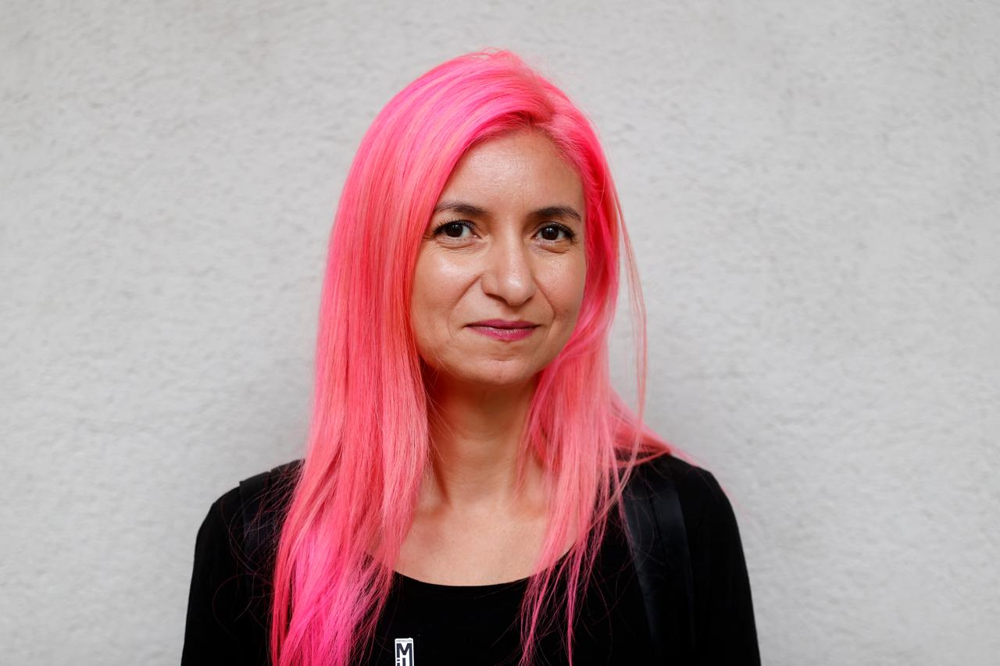

Comunicación estratégica
Diseño narrativas, mensajes clave y posicionamiento institucional para organizaciones que necesitan que su trabajo sea visto y entendido.
Periodista cultural y estratega en comunicación institucional
Periodista con demasiada curiosidad para quedarse en un solo tema. Pasé de cubrir cultura a traducir causas complejas en algo que la gente quiere leer. Con humor cuando se puede, con datos cuando se debe.
Santiago de Chile · En proceso de traslado a Madrid · Disponible para trabajo presencial en España o remoto LAC / internacional

No me interesa comunicar por comunicar.
Me interesa contar historias que incomoden, que abran preguntas y acerquen lo político a lo humano.
Empecé en redacciones donde la ironía era una forma de resistencia y hoy trabajo en espacios donde la comunicación es también una forma de cuidado político. Entre ambos mundos aprendí que lo más difícil no es tener algo que decir — es saber cómo decirlo para que le importe a alguien que no estaba buscándolo.
Soy periodista y editora con más de quince años de experiencia entre medios, proyectos culturales y organizaciones sociales. Busco que la información no solo circule, sino que tenga efecto: claridad sin simplificar y profundidad sin rigidez.
Siempre digo que soy periodista. No comunicadora estratégica, no content manager, no community builder. Periodista. Porque al final, detrás de todas las siglas y las plataformas, el trabajo sigue siendo el mismo: encontrar la mejor manera de que algo llegue a alguien. Eso es lo que hago, con las herramientas que existan.
de crecimiento digital orgánico — de 6.000 a 135.000 seguidores.
de impresiones mensuales.
cobertura en NYT, BBC, The Guardian y CNN.
finalista del Premio Periodismo de Excelencia UAH — máximo reconocimiento gremial del periodismo chileno.
publicada en Courrier International (París, 2009).
2023–2024 · International Women's Media Foundation.
investigaciones periodísticas coordinadas en la región.
años de experiencia en periodismo y comunicación institucional.
Diseño narrativas, mensajes clave y posicionamiento institucional para organizaciones que necesitan que su trabajo sea visto y entendido.
Desarrollé y ejecuté estrategias de contenido orgánico para organizaciones que necesitan crecer sin depender de pauta. Solo contenido con criterio editorial y conocimiento de plataformas.
Conceptualizo y desarrollo campañas que buscan instalar conversaciones, no solo generar clics.
Traduzco evidencia, investigaciones y políticas públicas en mensajes que la gente pueda leer, entender y usar.
Revista de periodismo satírico y político, referente en cultura y opinión en América Latina.
Escribí, edité e investigué sobre cultura y política durante doce años — los primeros diez como periodista y los últimos dos como editora de la sección. Dos de mis reportajes fueron finalistas del Premio de Excelencia Periodística UAH (2008 y 2016). Uno de ellos, «El hombre del cartel», fue traducido al francés y publicado en Courrier International (Grupo Le Monde, París, 2009), adaptado para teatro, cómic y es hoy la base de un guion cinematográfico en desarrollo.
De esa etapa conservo el gusto por las historias que cuestionan y la escritura con identidad.
«Rubén Araya está arriba de un cartel caminero enorme, de más de 16 metros de alto, desde donde se disfruta de una vista impresionante. Abajo corre el río Mapocho, turbio y torrentoso. En la otra ribera está la Costanera y los autos no paran un segundo de pasar. El aviso está sobre el Parque de los Reyes y cuando no hay contaminación, la cordillera se ve enorme. Rubén vive en el otro lado de ese mensaje, en una casucha de un metro por dos.»
Organización feminista que promueve los derechos sexuales y reproductivos en Chile y América Latina.
Ingresé como periodista y asumí la coordinación de comunicaciones. Desde ahí diseñé e implementé estrategias que combinaron incidencia política con contenidos digitales para audiencias que antes no nos leían. Campañas como #DiccionarioFeminista, #Silenciadas y #QueSeaConsentido — además del Podcast de Miles en Radio Súbela y Sexo a Miles — instalaron debates sobre aborto, violencia de género, educación sexual y derechos reproductivos fuera del circuito activista.
El crecimiento fue orgánico — de 6.000 a 135.000 seguidores, con más de 1,2 millones de impresiones mensuales — y la cobertura llegó al New York Times, The Guardian y CNN.
Entre 2007 y 2024 colaboré con medios, organizaciones sociales, culturales y educativas. Desarrollé estrategias editoriales, produje campañas y escribí sobre cultura y política. Fui investigadora y productora periodística del libro «Mi propio sutra» (Editorial Planeta, 2024), sobre la historia de la masturbación femenina. También he sido asesora editorial para publicaciones sobre género y cultura.
Rubén Araya vive en una casucha de un metro por dos, detrás de un cartel caminero de Coca-Cola de 16 metros sobre el Parque de los Reyes. Un perfil desde los márgenes de la ciudad. Finalista del Premio de Excelencia Periodística UAH.
Un reportaje sobre el legado del jefe de la DINA, la policía secreta de la dictadura de Pinochet. Finalista del Premio de Excelencia Periodística UAH 2016. Co-escrito con Jorge Rojas.
Entrevista al poeta chileno a propósito de su novela «Los nombres propios».
Un perfil sobre la vida y el último amor de José Pizarro Caravantes, «Divino Anticristo».
Una ex funcionaria municipal denuncia haber sido obligada a infiltrarse en la primera línea de las protestas en Plaza de la Dignidad.
De redes sociales a Lollapalooza Chile 2023: primera ONG en instalar un mensaje contra el acoso sexual en un festival masivo. Replicada en fiestas Bresh, alcanzando públicos juveniles fuera del ámbito digital.
Estrategia de prensa y redes que visibilizó la afectación a más de 200 mujeres. Cobertura en The New York Times, The Guardian y CNN.
Busco proyectos donde comunicar bien no sea un detalle sino una decisión central. Medios, organizaciones sociales, instituciones culturales, organismos internacionales — me interesan los espacios donde las palabras tienen consecuencias reales y donde el criterio editorial importa tanto como la estrategia.
Estoy en Santiago de Chile, en proceso de traslado a Madrid, y estoy abierta a posiciones presenciales en España o remotas para América Latina e internacional. Si tienes un proyecto o una vacante que encaje, escríbeme.